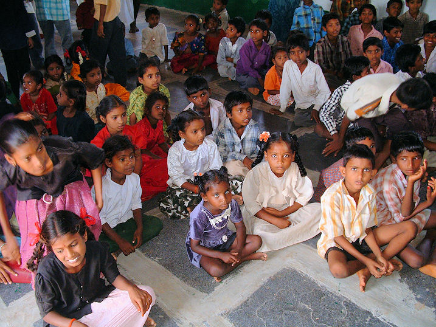
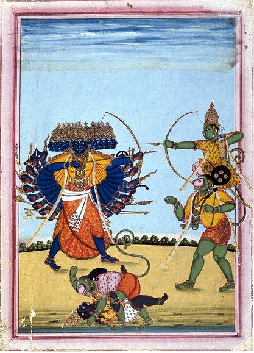
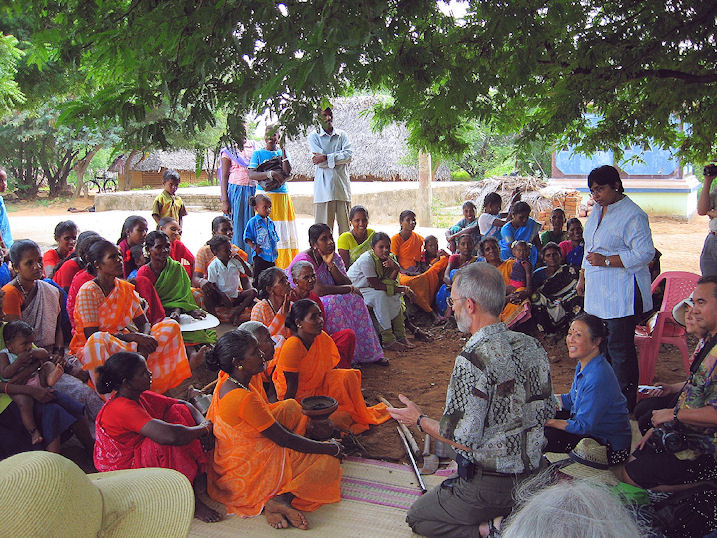

mailto:payer@payer.de
Zitierweise | cite as:
Payer, Alois <1944 - >: Sanskritkurs. -- 24. Lektion 24. -- Fassung vom 2008-12-24. -- URL: http://www.payer.de/sanskritkurs/lektion24.htm
Erstmals hier publiziert: 2008-12-15
Überarbeitungen: 2008-12-24 [Verbesserungen]
Anlass: Lehrveranstaltungen 1980 - 1984
©opyright: Dieser Text steht der Allgemeinheit zur Verfügung. Eine Verwertung in Publikationen, die über übliche Zitate hinausgeht, bedarf der ausdrücklichen Genehmigung des Verfassers
Dieser Text ist Teil der Abteilung Sanskrit von Tüpfli's Global Village Library
Falls Sie die diakritischen Zeichen nicht dargestellt bekommen, installieren Sie eine Schrift mit Diakritika wie z.B. Tahoma.
Die Devanāgarī-Zeichen sind in Unicode kodiert. Sie benötigen also eine Unicode-Devanāgarī-Schrift.
| 1. Um den Zweck oder eine Absicht ("um
zu") einer handlung wiederzugeben, kann man statt des Infinitivs (तुमुन्)
auch ein Nomen mit kṛt-Suffix, das eine Handlung oder einen Zustand
bezeichnet, im Dativ (चतुर्थी = "vierte Kasusendung") verwenden. Beispiel: anstatt:
kann man auch sagen:
oder:
= "Rāma ist gegangen, um die Rede des Lehrers zu hören." |

Abb.: बाला गुरुश्रवणाय गताः
[Bildquelle: sknaB nolA. --
http://www.flickr.com/photos/nolasknab/110920752/. -- Zugriff am
2008-12-14. --

 Creative
Commons Lizenz (Namensnennung, keine Bearbeitung)]
Creative
Commons Lizenz (Namensnennung, keine Bearbeitung)]
| 2. Der Dativ (चतुर्थी) kann auch das
Objekt eines zu ergänzenden Infinitivs des Zweckes bezeichnen: Beispiel:
In gleicher weise bezeichnet der Dativ (चतुर्थी) den Zweck eines Dinges oder einer Handlung: Beispiel:
|
Abb.: यज्ञायान्नम
"'Annakut' [अन्नकूट = गोवर्धन पूजा] is a traditional Hindu event that takes place on the Hindu New Year celebrations at all BAPS [બોચાસનવાસી અક્ષ૨ પુરુષોત્તમ સ્વામિનારાયણ સંસ્થા = Bochasanwasi Akshar Purushottam Swaminarayan Sanstha] mandirs. Hundreds of vegetarian dishes are offered to Bhagwan Swaminarayan [સ્વામિનારાયણ] on this day. All these dishes are made to offer devotion towards GOD. They are nicely decorated and placed on a decorated display set up."
[Bildquelle: chiragkpatel. -- http://www.flickr.com/photos/chiragkpatel/61224686/. -- Zugriff am 2008-12-14. --
Creative Commons Lizenz (Namensnennung, keine kommerzielle Nutzung)]
| 3. Der Dativ (चतुर्थी) bezeichnet auch
die Person oder Sache, für die das Objekt einer Handlung bestimmt
ist (indirektes Objekt ; Frage: wem?). (Beachten Sie aber die Verben
mit doppeltem Akkusativ (द्वितीया)!) Beispiel:
|
Abb.: बाला बलाय रक्षबन्धनं ददाति
"Raksha bandhan is celebrated with fervour and joy all across India. This festival epitomizes the unconditional love between brothers and sisters. The festival is marked by the tying of a rakhi, or holy thread by the sister on the wrist of her brother. The brother in return offers a gift to his sister and vows to look after her. The brother and sister traditionally feed each other sweets."
[Bildquelle: yogu. -- http://www.flickr.com/photos/meethi/1266237363/. -- Zugriff am 2008-12-14. --
Creative Commons Lizenz (Namensnennung, keine kommerzielle Nutzung, share alike)]
| 4. Der Dativ steht bei einigen Verben
(und einigen anderen Wörtern) ähnlich wie im Deutschen auf die Frage
"wem?": Beispiele:
|

Abb.: अलं योधो योधाय
"Rama (right) seated on the shoulders of Hanuman, battles the demon-king
Ravana."
ca 1820
[Bildquelle: Wikipedia, Public domain]
Weitere Verwendungen des Dativ später.
Die regelmäßigen Endungen des Dativ sind:
|
| Dativ Singular | Dativ Plural | |
|---|---|---|
| यजन्त् | यजते yaja-t-e |
यजद्भ्यस् aus yaja-t-bhyas |
| महान्त् | मह्ते | महद्भ्यस् |
| पशुमन्त् | पशुमते | पशुमद्भ्यस् |
| गुणवन्त् | गुणवते | गुणवद्भ्यस् |
| Maskulinum / Neutrum | Femininum | |
|---|---|---|
| Dativ Singular | कस्मै | कस्यै |
| Dativ Plural | केभ्यस् | काभ्यस् |
| तद् | एतद् | इदम् | ||
|---|---|---|---|---|
| Maskulinum / Neutrum | Dativ Singular | तस्मै | एतस्मै | अस्मै |
| Dativ Plural | तेभ्यस् | एतेभ्यस् | एभ्यस् | |
| Femininum | Dativ Singular | तस्यै | एतस्यै | अस्यै |
| Dativ Plural | ताभ्यस् | एताभ्यस् | आभ्यस् |
Maskulina / Neutra auf -a:
देव
Maskulina auf -i: कवि
Maskulina auf -u: पशु
Feminina auf -ā: देवता
Feminina auf -ī: देवी
Feminina auf -i: श्रुति
Feminina auf -u: धेनु
|
Beispiel:
|
अलम् Adverb: genug, hinreichend, (jemandem, etwas) gewachsen ; mit Dativ: genug für, hinreichend für, dem gewachsen ; mit Instrumentalis: genug mit, lass ab von , z.B. अलं क्रोधेन = "genug mit dem Zorn = lass ab vom Zorn!"
In gleicher Weise wie अलम् mit Instrumentalis wird verwendet:
कृतम् : कृतं क्रोधेन = "Es ist getan mit dem Zorn = lass ab vom Zorn!"
अलम् + कृ 8U अलंकरोति : schmücken
अलंकार m.: Schmuck, Schmuckmittel (in der Dichtung)
Abb.: अलंकारः
[Bildquelle: sarboo. -- http://www.flickr.com/photos/sarboo/320741523/. -- Zugriff am 2008-12-14. --Creative Commons Lizenz (Namensnennung, keine kommerzielle Nutzung, keine Bearbeitung)]
हेतु m.: Antribe, Veranslassung, Ursache, Grund ; हेतुना, हेतोस्, हेतवे mit Genetiv oder als Hinterglied eines Kompositums = "um ... willen, wegen"
प्रतिमा f.: Bildnis, Abbild
Abb.: देवीप्रतिमा
Hampi = ಹಂಪೆ,
Karnataka = ಕರ್ನಾಟಕ
[Bildquelle: thaths. --
http://www.flickr.com/photos/thaths/862012190/. -- Zugriff am 2008-12-14. --

 Creative
Commons Lizenz (Namensnennung, keine kommerzielle Nutzung)]
Creative
Commons Lizenz (Namensnennung, keine kommerzielle Nutzung)]
वृत् + प्र 1Ā प्रवअर्तते : erfolgen, geschehen, entstehen
Von वृत्:
वृत्ति f.: Benehmen, Tätigkeit, Lebensweise
वृत्त n.: Benehmen
अभि Präverb: be-, nach - hin, zu - her, zu - hin, gegen, in - hinein, in Bezug auf, auf, über, an
नि Präverb: niederwärts, hinunter, hinein, rückwärts
आ Präposition / Postposition: vor Ablativ oder nach Akkusativ: bis hin, bis zu ; mit Ablativ: von her, von an, seit
अतस् Indeklinabile: von da, dann, deshalb, daher (Pronominalstamm a- "dieser" + Ablativsuffix -tas)
अध्यक्ष m.: Aufseher, Departementschef ; Augenzeuge
इन्द्रिय n.: Kraft, Sinnesorgan
ऊह m.: Überlegung, Argumentation
davon
अपोह m.: Negierung (अप + ऊह)
ऊहापोह m.: Diskussion des Für und Wider
Abb.: ऊहापोहः"NEW DELHI/INDIA, 16NOV08 - Suhasini Haidar, Deputy Foreign Editor, CNN-IBN Network 18, India, moderates a panel discussion at the World Economic Forum's India Economic Summit 2008 in New Delhi, 16-18 November 2008."
[Bildquelle: World Economic Forum / Photo by Dana Smillie. --http://www.flickr.com/photos/worldeconomicforum/3040064901/. -- Zugriff am 2008-12-14. --
औपकारिक 3 f.: -ई : nützlich
कुप्य n.: Walderzeugnis, Metall (nicht Edelmetall)
ख्या 2P ख्याति PPP ख्यात : sehen, sichtbar werden ; nennen, erklären, mitteilen
ख्या + आ 2P आख्यात : erzählen
davon:
आख्यान n.: Erzählung

Abb.: आख्यानम्"San Francisco storyteller Jeff Byers shares a story with the residents of Chenneri, an Irula village. Storyteller Jeeva Raghunath translates into Tamil for the villagers. "
[Bildquelle: ereneta. -- http://www.flickr.com/photos/tereneta/3062024840/. -- Zugriff am 2008-12-14. --
ख्या + सम् 2P संख्याति : zusammenzählen, berechnen
davon:
संख्य m.: Zählung, Aufzählung ; eines der sechs philosopphischen System (kurz: Basham, Wonder S. 326f.)
ग्रहण n.: Ergreifen
चौल n.: Zermonie (संस्कार) des Haarschneidens (im Alter von 3 Jahren)
तत्त्व n.: wahres Wesen, Wahrheit, Realität (तद् + त्व = Dies-heit)
स्वस्ति f.: Glück, Heil (Nominalbildung aus सु अस्ति = "es ist gut")
नमस् n.: Verbeugung, Verehrung, Gruß (Deklination später). Begrüßungsformel: नमो नमः
davon:
कृ + नमस् 8 नमस्करोमि : sich verbeugen, verehren, begrüßen
Abb.: जयदेवकविर्विष्णुं नमस्करोति
Manuskript des गीतगोविन्द, 1730 n. Chr.
[Bildquelle: Wikipedia, Public domain]
स्वागत n.: Willkommen (aus su-ā-gata)
तृण n.: Grashalm
पुनर् Adverb: wiederum, wieder, zurück, aber
A) Bilden Sie den Dativ Singular und den Dativ/(Ablativ) Plural und geben Sie die Bedeutung des Nominalstamms an:
B) Übersetzen Sie und lösen Sie die Komposita in Sanskrit auf:
ब्राह्मणो देवप्रतिमादर्शनाय गर्भगृहं विशति ॥१॥
नरा धनलाभाय व्रतानि चरन्ति ॥२॥
गुरुर्धर्मोपदेशाय नगरं गतः ॥३॥
बाला अपि गुरुवचनश्रुत्यै नगरं गताः ॥४॥
देवप्रतिमायै गृहं गर्भगृहम् ॥५॥
स्वर्गेभ्यो नराः पुण्यं कर्तुमिच्छन्ति ॥६॥
मोक्षार्थं बुद्धगता बुद्ध्याप्तिमिच्छन्ति ॥७॥
देवास्तेभ्यो ऽकृतपुजाब्रामणेभ्यः क्रुध्यन्ति ॥८॥
मरणाय जना जायन्ते ॥९॥
C) Geben Sie die Sätze A) 1-4 in Sanskrit wieder, indem Sie statt der Dative Infinitive (तुमुन्) setzen. Beachten Sie, dass der Infinitiv den gleichen Kasus regiert wie das entsprechende Verb.
D) Ersetzen Sie in Satz A) 7 die Konstruktion mit -अर्थ durch einen gleichwertigen Dativ.
E) Ersetzen Sie in Satz A) 6 die Dativkonstruktion durch eine gleichwertige Konstruktion mit -अर्थ
Übersetzen Sie ins Sanskrit:
1. Die Göttin, der man nicht geopfert hat, zürnt den Menschen.
2. Er lässt die Kuh ins Dorf los.
3. Jetzt reichts = Genug mit der Geduld.
4. Das ist gut (हित, सुख) für einen Brahmanen.
5. Verehrung (नमस्) sei Śiva! Verehrung sei Śrī Gaṇeśa!
Abb.: श्रीगणेशाय नमः
[Bildquelle: Redtigerxyz / Wikipedia, GNU FDLicense]
6. Auf Wiedersehen! (= Wohlergehen (स्वस्ति f.) Ihnen!)
7. Diese Frucht reicht zum Essen.
8. Ein Kämpfer ist dem (anderen) Kämpfer gewachsen (शक्त).
9. Selbst Viṣṇu übertrifft (प्र-भू + Dat.) Śiva nicht.
10. Nachdem ich mich vor den drei Weisen (Akk.) verbeugt habe (नमस्कृ)... Er verbeugt sich vor Narasiṃha (Dat.)
Erklärung: मुनित्रयम् "die Dreiheit der Weisen = die drei Weisen" = die Grammatiker पाणिनि, कात्यायन, पतञ्जलि
Abb.: नरो नरसिंहाय नमस्करोति
नरसिंह zerfleischt हिरण्यकशिपु, Blatt aus einem Manuskript des भगवतपुराण
[Bildquelle: Wikipedia, Public domain]
11. Willkommen (स्वागतम्) Ihnen. Willkommen der Königin.
12. Ich wünsche Ihnen Wohlergehen (कुशल) = Wohlergehen Ihnen!
13. Er betrachtet ihn nicht als Grashalm.
14. Es reicht eine Frucht zum Essen und Wasser zum Trinken.
15. Auf Widersehen! (Neusanskrit: पुनर्दर्शनाय)
Zu Lektion 25